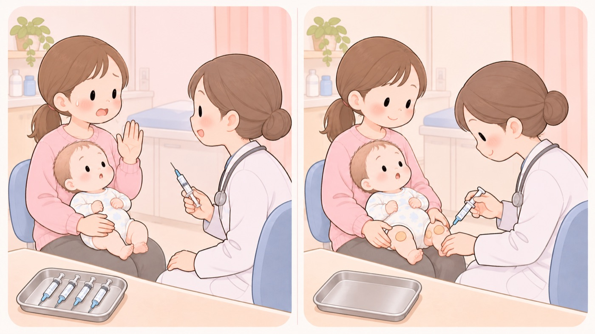

同じ日に何本も打つこと（同時接種）
打てる本数に原則の制限はない。副反応が増えることも、効きが落ちることもない
生後2か月から、受けるワクチンの数が一度に増えます。同じ日に4本も5本も打つと聞いて、分けて打ってもらったほうが安全ではないかと考える人がいます。
日本小児科学会は、分ける理由は無いとしています。同時接種をしても、それぞれの効きかたは互いに干渉せず、副反応の頻度も上がりません。接種できる本数にも、原則として制限がありません。

- すること：勧められた本数を、その日にまとめて打ってもらう
学会は「複数のワクチン（生ワクチンを含む）を同時に接種して、それぞれのワクチンの有害事象、副反応の頻度が上がることはない」としています。生ワクチンも含めて同じです。
- すること：分けると、守られていない期間がそのぶん伸びると知っておく
後ろに回したワクチンの接種は、その日数だけ遅れます。学会は同時接種の利点として、各ワクチンの接種率が上がることと、子どもが早く守られることを挙げています。待っているあいだは、まだ防げていません。
- すること：次の予約を、その日のうちに取る
学会は、保護者の経済的・時間的な負担が軽くなることも利点に挙げています。通う回数が減るぶん、受け忘れも減ります。
- しないこと：1本ずつにしてほしい、と自分から頼まない
医学的な理由があって医師が分けることはあります。そのときは医師が決めます。親の側から本数を減らすと、接種の時期が後ろにずれるだけになります。
- しないこと：熱や腫れが出たときに、本数のせいだと決めつけない
学会が確かめているのは、本数を増やしても副反応の頻度が上がらないことです。気になる症状は、何本打ったかではなく、症状そのものを医師に伝えます。
学会が、打ち方として示していること
同時接種のときに守ることとして、3つが挙げられています。複数のワクチンを1つのシリンジに混ぜて接種しないこと、皮下に打つ場所は上腕の外側か大腿の前外側であること、同じ側の近い部位に打つときは、局所の反応が重ならないように少なくとも2.5cm以上あけることです。
両腕と両脚に分けて打たれても、同じ腕に離して打たれても、どちらも手順のとおりです。
この項目の根拠
- 日本小児科学会の予防接種の同時接種に対する考え方（2026年6月3日改訂・日本小児科学会 予防接種・感染症対策委員会）（新しいタブで開きます）
日本国内では2種類以上の予防接種を同時に同一の接種対象者に対して行う同時接種は医師が特に必要と認めた場合に行うことができるとされている一方、諸外国では同時接種は一般的に行われている医療行為であること。同時接種について分かっていることとして、複数のワクチン（生ワクチンを含む）を同時に接種してそれぞれのワクチンに対する有効性について互いのワクチンによる干渉はないこと、それぞれのワクチンの有害事象・副反応の頻度が上がることはないこと、接種できるワクチン（生ワクチンを含む）の本数に原則制限はないこと。利点として各ワクチンの接種率が向上すること、子どもたちがワクチンで予防される疾患から早期に守られること、保護者の経済的・時間的負担が軽減すること、医療者の時間的負担が軽減すること。日本小児科学会はワクチンの同時接種を日本の子どもたちをワクチンで予防できる病気から守るために必要な医療行為であると考えること。留意点として、複数のワクチンを1つのシリンジに混ぜて接種しないこと、皮下接種部位の候補場所として上腕外側ならびに大腿前外側があげられること、上腕ならびに大腿の同側の近い部位に接種する際は接種部位の局所反応が重ならないように少なくとも2.5cm以上あけること。
関連キーワード予防接種ワクチン同時接種何本本数分けて分ける副反応副作用生後2か月スケジュール怖い不安まとめて